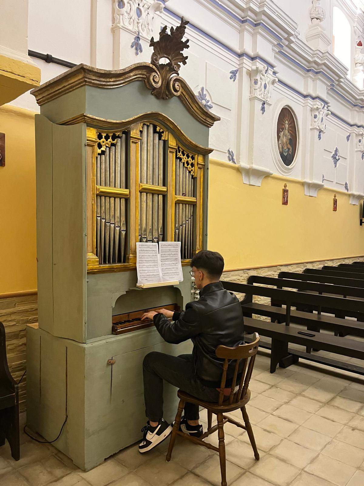
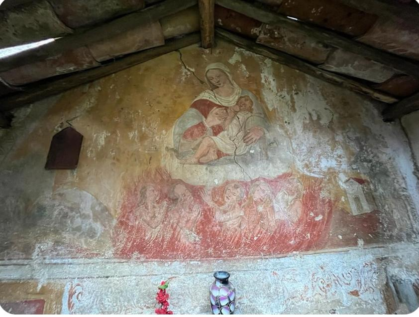
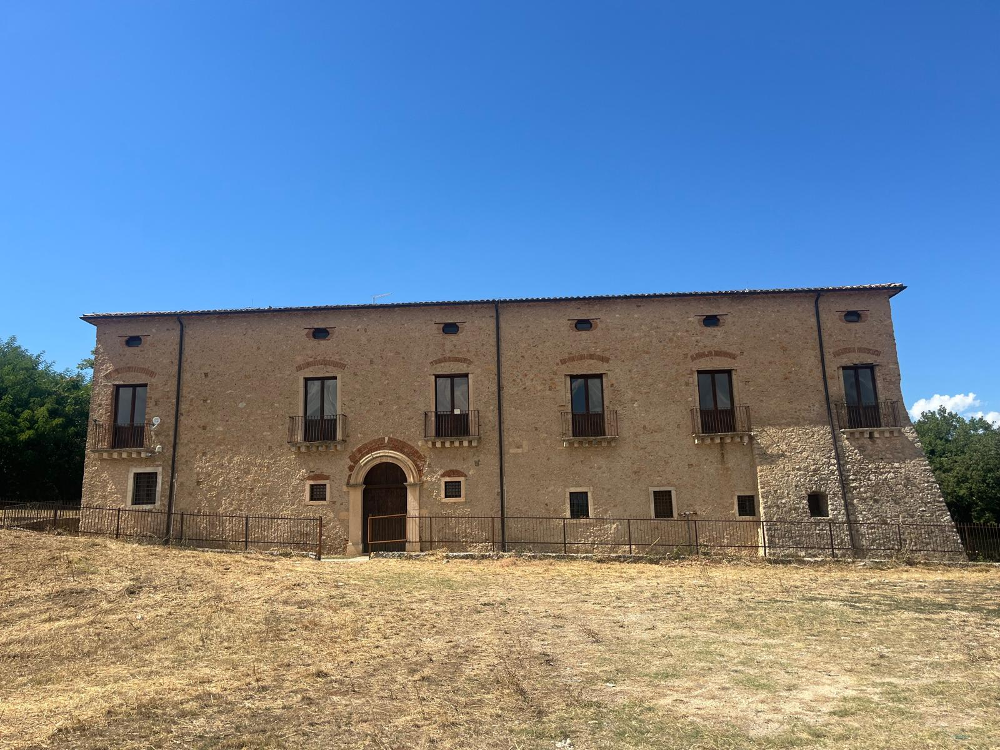
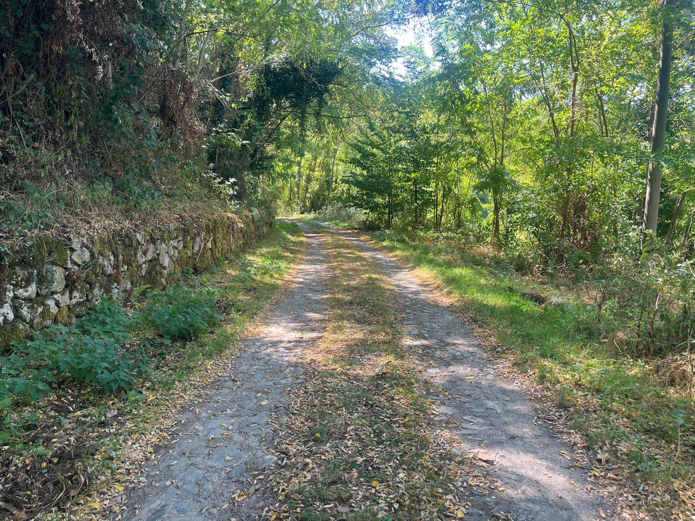
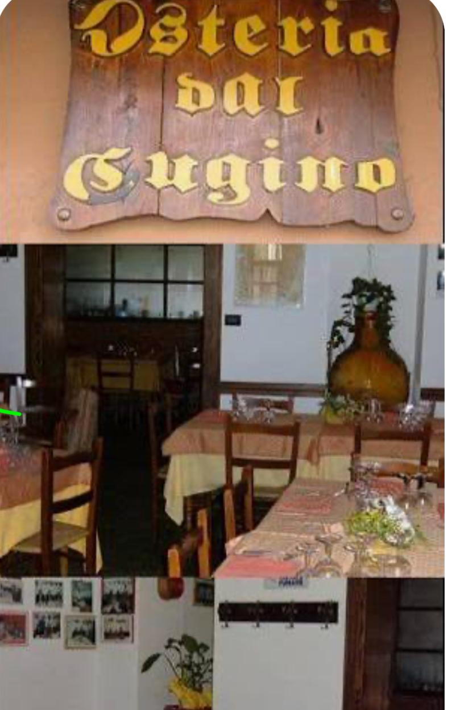
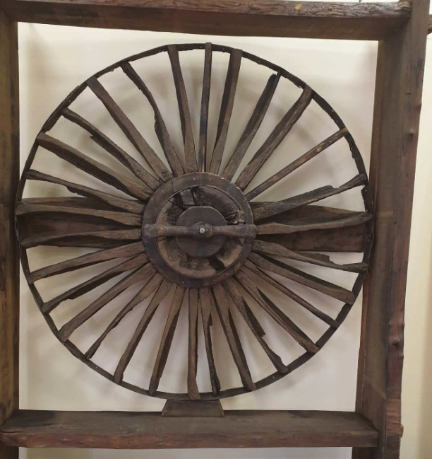
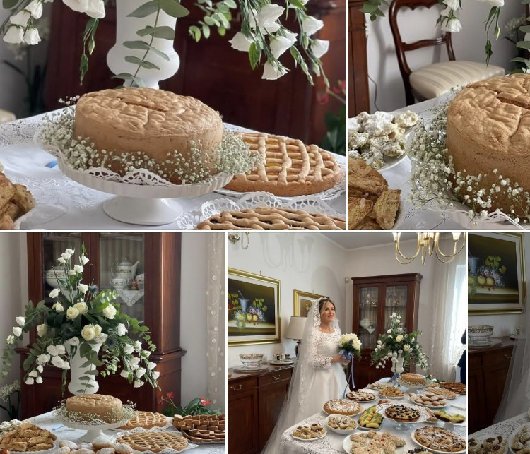
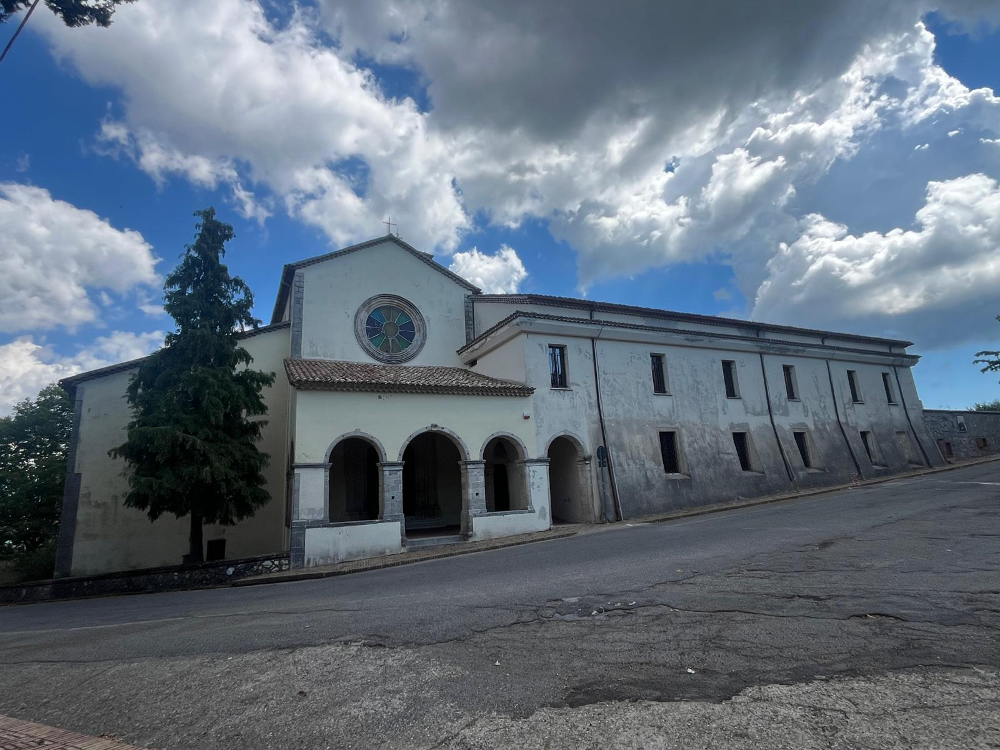

Punto di Ritrovo
Convento della Riforma, Dipignano (CS). Accoglienza partecipanti a partire dalle ore 10:00.
Collegamenti
Ben servito da pullman di linea da Cosenza (durata tragitto: circa 30 minuti) e collegamenti locali.
Orari Tour
Partenza guidata ore 10:30. Conclusione prevista alle ore 14:18 dopo la degustazione.
Dove Parcheggiare
Ampio parcheggio pubblico gratuito disponibile nelle immediate vicinanze del Convento e lungo la via principale.
L'Itinerario del Tour Guidato
Scopri le tappe ricche di fascino, trasferimenti suggestivi e pause di gusto previste per la giornata.
Convento della Riforma & Museo della Cripta
Incontro con la guida e partenza del tour. Visita approfondita della preziosa statua lignea dell'Ecce Homo, del celebre affresco di Carlo V e del Museo della Cripta.

Trasferimento breve verso la Chiesa dei Doviziosi
Chiesa dei Doviziosi
Visita guidata alla Chiesa dei Doviziosi, gioiello architettonico incastonato nel borgo storico.

Passeggiata verso la Chiesa dell'Immacolata
Chiesa dell'Immacolata & Ascolto Organo del 1800
Visita della chiesa impreziosita da un momento d'ascolto unico: l'esecuzione musicale sull'antico organo ad aria risalente al 1800.

Trasferimento in navetta e passeggiata verso La Motta
Chiesa della Madonna del Latte & Antico Borgo "La Motta"
Visione del magnifico affresco e dell'area circostante, testimonianza del primitivo insediamento del borgo storico di Dipignano noto come "La Motta".

Rientro in navetta verso il Convento dei Cappuccini
Convento dei Cappuccini
Tappa di grande spiritualità e storia con visita guidata alle sale ed ai chiostri del Convento dei Cappuccini.

Passeggiata sul Sentiero Friddizza
Discesa immersa nella natura lungo l'antico sentiero Friddizza, caratterizzato da pavimentazione in acciottolato e folta vegetazione.

Sosta Enogastronomica all'Osteria dal Cugino
Pausa conviviale e relax per assaporare i piatti tipici della tradizione calabrese preparati con ingredienti locali d'eccellenza.

Spostamento verso il Museo del Rame
Museo del Rame & Pausa Caffè
Scoperta della secolare arte dei "calderai" e lavorazione artigianale del rame che ha reso celebre Dipignano. A seguire pausa caffè.

Pasticceria Naccarato — Il Pan di Spagna di Dipignano
Tappa d'obbligo presso la storica Pasticceria Naccarato per scoprire ed assaggiare il famoso e soffice Pan di Spagna di Dipignano.

Conclusione & Rientro al Convento della Riforma
Rientro a piedi al punto di partenza iniziale (Convento della Riforma) e saluti finali.

Schema del Percorso e Mappa Geografica
I Luoghi del Tour
Convento della Riforma & Museo della Cripta
Fotografia 1 — Convento della Riforma
Chiesa dei Doviziosi
Fotografia 2 — Chiesa dei Doviziosi
Chiesa dell'Immacolata & Ascolto Organo del 1800
Fotografia 3 — Antico Organo ad Aria
Chiesa della Madonna del Latte & Antico Borgo "La Motta"
Fotografia 4 — Affresco & La Motta
Convento dei Cappuccini
Fotografia 5 — Convento dei Cappuccini
Passeggiata sul Sentiero Friddizza
Fotografia 6 — Sentiero Friddizza
Sosta Enogastronomica all'Osteria dal Cugino
Fotografia 7 — Osteria dal Cugino
Museo del Rame & Pausa Caffè
Fotografia 8 — Museo del Rame
Pasticceria Naccarato — Il Pan di Spagna di Dipignano
Fotografia 9 — Pan di Spagna di Naccarato
Conclusione & Rientro al Convento della Riforma
Fotografia 10 — Panoramica Convento